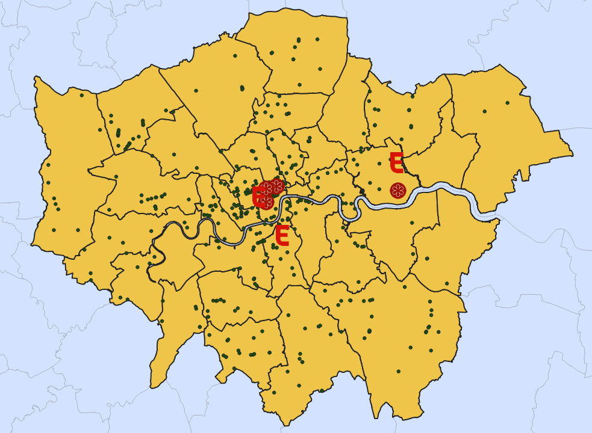
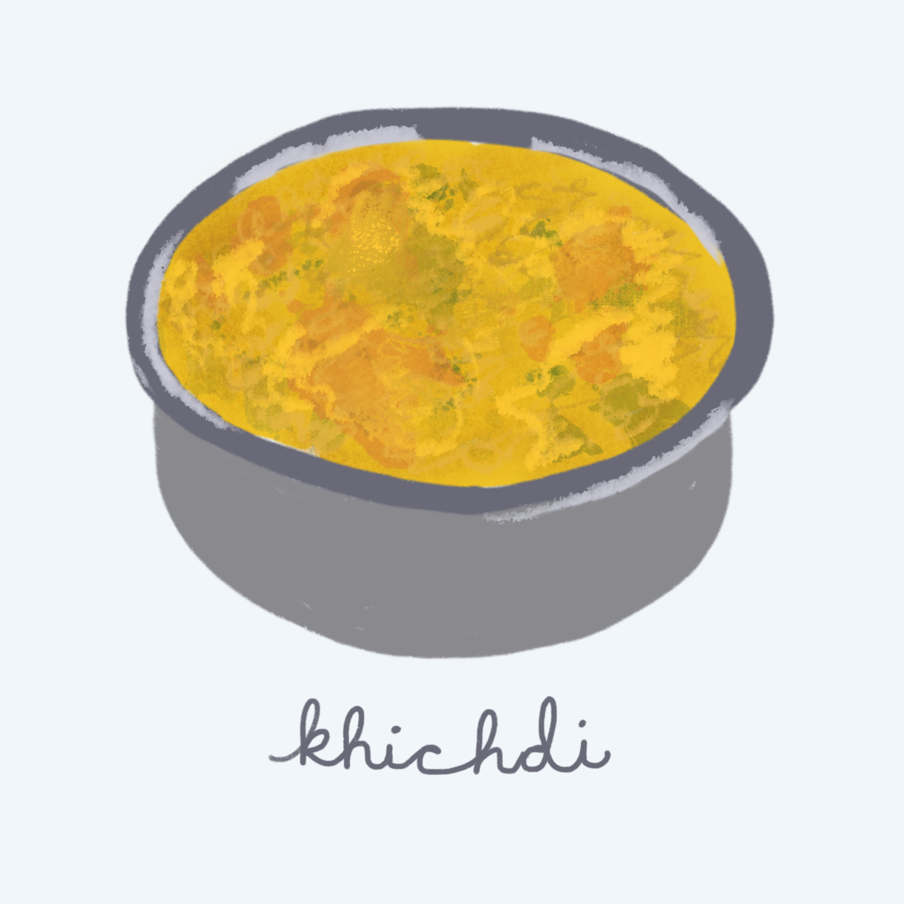

Today's London is a far cry from Charles Dickens's nineteenth century portrayals. It's a diverse city that welcomes immigrants, one where British Indians constitute the largest ethnic minority group. Events such as the end of World War II and the Indian Partition of 1947 ushered in Indian immigrants looking to fill labor shortages and build their lives in the city. Since their arrival, British Indian influence has seeped into daily London life. You'll find residents navigating Little Punjab's bustling streets and diners flocking to Indian restaurants for the finest channa masala.
Social and demographic progress can be traced through a city's foodways. To show the landscape of Indian food culture in London, I created two maps: one showing borough breakdowns of Greater London's Indian population from the 2011 Census, and the other showing the number of Indian restaurants in the city according to Open Street Map (OSM) data, plus Indian restaurants declared noteworthy by popular food critics. I approached these two maps with a central question: Do more Indian Restaurants exist in boroughs with a higher proportion of Indians, and if so, are they being acknowledged by food media?
When he sat in the garden downstairs, eating his khichdi - which the British had changed into kedgeree - from his little bowl, the girl living across the hall screwed up her face. This was what colonialism, fifty years after the Empire ended, had done to my son: It had rendered our language unspeakable, our food inedible.
- Suketu Mehta, Maximum City
Race Demographics in London: Indians
According to the demographic map, most Indians live in West London, a proportion that reaches as high as 25% in the Harrow borough. In the 1960s, businesses such as The R Woolf Rubber Factory eagerly recruited Indian workers and helped spur migration to Southall, West London. (Data from the Office for National Statistics Annual Population Survey confirms that borough demographics have remained fairly consistent in the past ten years.) To reflect the high concentration of Indian people and street life closely resembling that of India, the Southall district, part of West London's Ealing borough, has been nicknamed Little India or Little Punjab.
Indian Restaurants in London
Plus, the Indian restaurants that made the UK Michelin Guide and Eater's 38 Essential Restaurants

The second map reveals that Indian restaurants are represented across London, but most cluster around the center of London rather than West London or boroughs with a high proportion of British Indians. Recognition for the best Indian restaurants in London follow a similar pattern: four Indian restaurants in the Michelin Guide and three from Eater's 38 Essential Restaurants in London are located in central London, only a few blocks from the Thames.
- - -
Given that most Indian people live outside the center of London, I'm intrigued that a majority of Indian restaurants do not show up in West London and zero West London Indian restaurants make it onto popular food lists (Michelin, Eater). An obvious answer is that the center of London functions as a social and financial hub, and therefore attracts the best culinary innovators who want to be close to other chefs. On the other hand, these food critics have primarily covered restaurants in the center of London, a fixation that may prevent them from amplifying restaurants beyond districts familiar to them. Nor do these maps speak to the experiences of British Indians living in West London, who can cook delicious Indian food without needing to eat out and thus galvanize restaurant publicity.
A few more notes: the OSM data includes the "cuisine" category for 3064 out of 4913 restaurants, which means that restaurants specializing in fusion cuisine (Trinidadian food which melds Indian and West African cuisines) are not featured. On top of that, this data set likely omitted Indian food carts that serve delicacies such as panipuri and sweet corn, which dominate street life in West London. I would be curious to see how OSM categorizes "official" restaurants, and how this may exclude certain eateries, such as ethnic food spots that do not fit into this mold.
Compare both maps
Acknowledgements

Data + Resources
English 184f: City Fictions
- Indian restaurants featured in The Michelin Guide Great Britain & Ireland 2020
- The 38 Essential Restaurants in London
- Census 2011 Map: Wards in London
- London Unsplash Photo by Bruno van der Kraan
English 184f: City Fictions